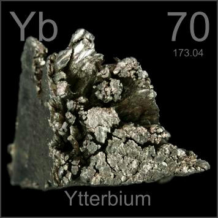

HOME
PREVIOUS
NEXT

Ytterbium
Atomic Weight: 173.045
Density: 6.57 g/cm3
Melting Point: 819 °C
Boiling Point: 1196 °C
Ytterbium has useful catalytic properties and is finding increasing use in the chemical industry due to its low toxicity and relative abundance. It is the last of four elements named after the town of Ytterby, Sweden.